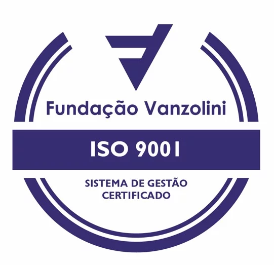

ISO 9001:2015Qualidade que se constrói em cada etapa.
A Hi-Tech informa a certificação ISO 9001:2015 para seu sistema de gestão da qualidade. Organização dos processos e melhoria contínua fazem parte desse compromisso.
Informações institucionais ↗